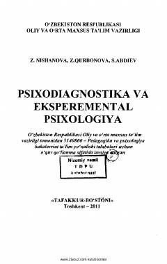

PVPsixologik tekshiruv va diagnostika metodikalari bayon etilgan o'quv qo'llanma.
Ushbu o'quv qo'llanmada maktabgacha va kichik maktab yoshidagi bolalar hamda kattalarni psixologik tekshirish metodikalari va testlari bayon etilgan. Unda diqqat, xotira, tafakkur, nutq hamda shaxs xususiyatlarini o'rganish usullari o'zbek muhitiga moslashtirilgan holda berilgan. Kitob amaliy psixologlar, o'qituvchilar va va pedagogika-psixologiya yo'nalishi talabalariga mo'ljallangan.